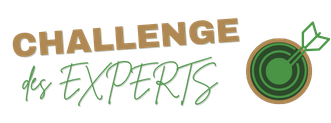

Deux jeux à faire en même temps, au fil de votre balade. Scannez les pancartes dans l'ordre de votre choix et passez d'un jeu à l'autre quand vous voulez : chaque jeu garde votre progression.
Jeu permanent

L'histoire du thé et de Grand-Coude en 17 pancartes. Répondez aux questions et décodez les mots mystères.
Partez à la rencontre des trésors vivants de La Réunion : faune et flore endémiques menacées, fruits et légumes lontan. 17 pancartes, 17 espèces à retrouver.
🌿 Plante B = NOTRE THÉIER (Camellia sinensis) ! L’indice qui ne trompe jamais : le bord de la feuille est finement dentelé, comme une petite scie. C’est ce feuillage délicat qui fait toute l'identité de nos parcelles et donne nos arômes uniques en tasse.
☕ Plante A = Le Caféier (Bourbon Pointu) : Sa feuille se distingue nettement : ses bords sont lisses et ondulés, et sa surface est plus épaisse et vernissée.
Avant d'entrer
⏳Challenge des Experts : préparation…
⏳Le Zarlor Vivant : préparation…
Le réseau est faible dans la forêt : gardez cette page ouverte quelques secondes ici, les jeux s'enregistrent sur votre téléphone.
Pour scanner une pancarte, utilisez le bouton « Scanner » du jeu plutôt que l'appareil photo.